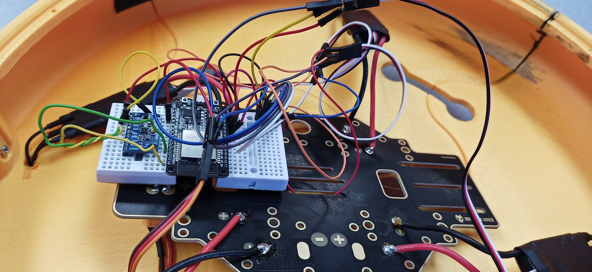

Ben Branch Electronic Backbone

Lessons Learned:
-
EasyEDA is easy.
-
However EasyEDA lacks some specific parts and breakouts. Had to use the chip itself for the MPU.
-
This was an easy extension from the gyroscope project.
-
You have to right click to make lines stop in EasyEDA.